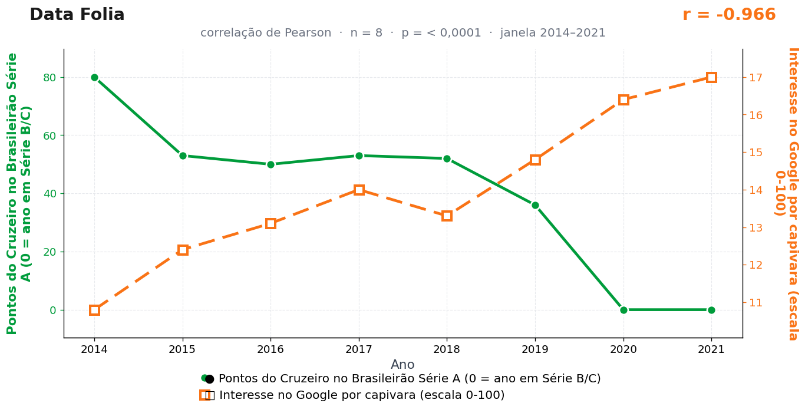

Post de 24/08/2026
A teoria
A campanha do Cruzeiro organiza uma parte sensível do humor esportivo brasileiro. Quando os pontos ficam escassos, aumenta a necessidade de uma figura que ofereça presença estável e que acalma.
A capivara cumpre esse papel com precisão. Ela não acelera, não discute lance e não demonstra surpresa diante do caos; sua postura entrega o equilíbrio que a tabela retira.
O interesse por capivara cresce como resposta de alívio coletivo. O futebol tensiona, a internet compensa, e a serenidade de margem de rio recoloca o torcedor em condições de encarar a rodada seguinte.
Nenhuma capivara foi flagrada comemorando rebaixamento alheio. Elas são discretas, e é justamente essa discrição que sustenta o modelo — na ausência de desmentido, a curva fala por elas.
A teoria é ficção; a correlação é real: r = −0,97 (n = 8, p < 0,001).
Os dados por trás

- Pontos do Cruzeiro no Brasileirão Série A (0 = ano em Série B/C) — 8 pontos anuais, período 2014–2021. Fonte: CBF / Wikipedia — Campeonato Brasileiro Série A.
- Interesse no Google por capivara (escala 0-100) — 8 pontos anuais, período 2014–2021. Fonte: Google Trends (pytrends).
Como as correlações deste site são encontradas — e por que você não deve confiar nelas — está explicado na nossa metodologia.
Por que isso acontece?
De 2014 a 2021, as duas séries são tendências quase puras em direções opostas: o Cruzeiro despenca de 80 pontos (campanha do título) até os dois zeros de 2020 e 2021 (anos de Série B), enquanto o interesse por capivara na internet sobe de 10,8 para 17,0 — o meme cresceu com as redes sociais, não com a tabela. Uma linha que desce contra uma linha que sobe: r = −0,97 garantido, mecânica pura.
O zero, de novo, é uma codificação editorial nossa: o Cruzeiro não desapareceu em 2020, apenas disputou outra divisão. Registrar Série B como "0 ponto" cria uma queda dramática artificial no fim da série — e pontas dramáticas são exatamente o que mais influencia o coeficiente de Pearson.
Junte tendência oposta, codificação que fabrica variância e 8 pontos anuais, e a correlação forte deixa de ser surpresa para virar consequência. A capivara segue inocente, como sempre esteve.
Post de 24/08/2026 · publicado também no Instagram @datafolia.